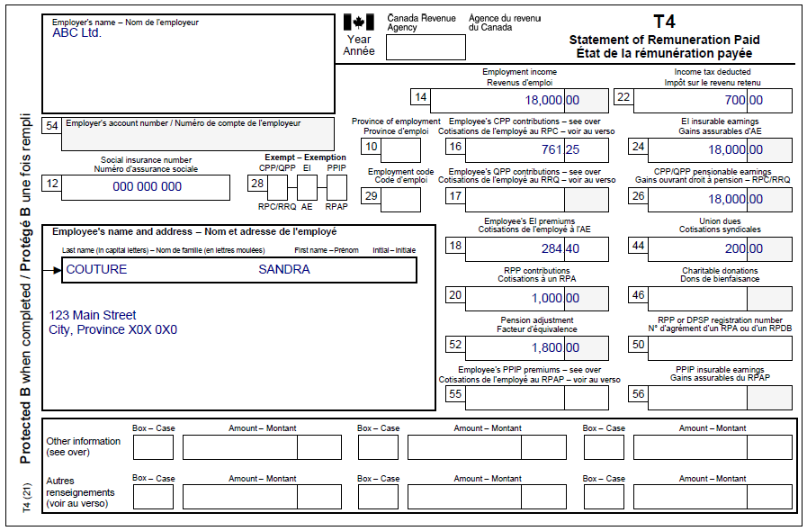
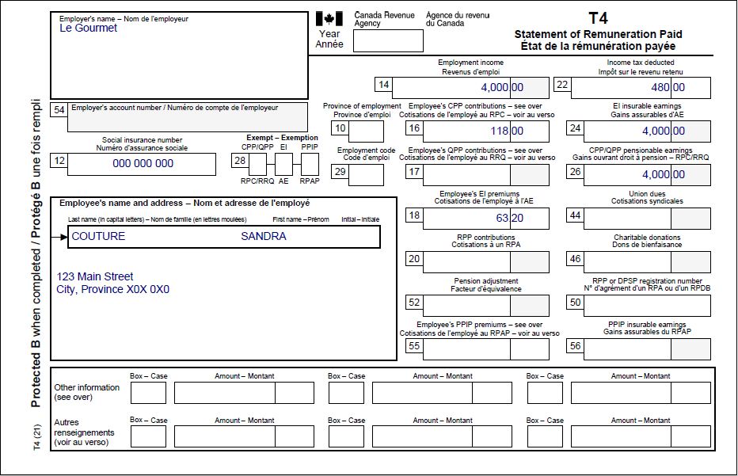

Reporting tips and additional CPP contributions
Pre-test question
Sorry, that is incorrect.
The individual is responsible for providing you with any amounts they earned that are not reported on their T4 slip because these amounts must be reported on their tax return.
That is correct.
The individual is responsible for providing you with any amounts they earned that are not reported on their T4 slip because these amounts must be reported on their tax return.
Instructions
- Open the tax software
- Review the Background information and Required slips (tax slips, receipts, etc.)
- Provide all required information for the appropriate sections of the tax software
- Once completed, compare your results with the solution provided
- Afterwards, refer to the Takeaway points
Background information
Situation
Sandra worked at ABC Ltd. and Le Gourmet at the same time. She informed the volunteer that she received tips while working at Le Gourmet for a total of $2,000, which was not included on her T4 slip. Sandra would like to make additional Canada Pension Plan (CPP) contributions for the tips she earned.
Identification information
| Name | Sandra Couture |
|---|---|
| Social insurance number (SIN) | 000 000 000 |
| Address | 123 Main Street City, Province X0X 0X0 |
| Date of birth | May 5, 1995 |
| Marital status | Single |
Required slips
T4 – Statement of Remuneration Paid (ABC Ltd.)
Text version of the T4 slip
T4 – Statement of Remuneration Paid
Protected B
Employer’s name: ABC Ltd.
Employee’s name and address:
Last name: Couture
First name: Sandra
123 Main Street
City, Province X0X 0X0
Box 12: Social insurance number: 000 000 000
Box 14: Employment income – line 10100: 18,000.00
Box 16: Employee’s CPP contributions – see over: 761.25
Box 18: Employee’s EI premiums – line 31200: 284.40
Box 20: RPP contributions – line 20700: 1,000.00
Box 52: Pension adjustment – line 20600: 1,800.00
Box 22: Income tax deducted – line 43700: 700.00
Box 24: EI insurable earnings: 18,000.00
Box 26: CPP/QPP pensionable earnings: 18,000.00>br>
Box 44: Union dues – line 21200: 200.00
T4 – Statement of Remuneration Paid (Le Gourmet)
Text version of the T4 slip
T4E – Statement of Employment Insurance and Other Benefits
Protected B
Recipient’s name and address:
Sandra Couture
123 Main Street
City, Province X0X 0X0
Box 14: Total benefits paid: 6,000.00
Box 15: Regular and other benefits paid: 6,000.00
Box 22: Income tax deducted: 900.00
Box 12: Social insurance number: 000 000 000
Review your results
Solutions will be available in February 2023 as PDF.
Takeaway points
Steps to follow
- Review their background information and required slips
- Click T4 and employment income in the left-side menu
- Click the + sign next to T4 income (earned in any province except Quebec) in the T4 and T4E section and enter the Employer’s name and the amounts from the individual’s T4 slips into the corresponding fields
- Click T4 and employment income in the left-side menu and click the + sign next to Tips in the Other section to enter the total for tips and gratuities received during the year that are not included on their T4 slip
- Click T4 and employment income in the left-side menu and click the + sign next to CPT20 – CPP Election for Other employment earnings in the CPT20 section
- Select B Employment received tips, gratuities, or other earnings from the Select the type of employment on which you elect to pay CPP contributions (CPT20) drop-down menu
- Enter the following, in order, into each of the Other employment income, enter the gross amount earned fields:
- type of income (In this case, Tips)
- gross amount earned that the individual wants to make additional CPP contributions for
- address of the employer
The tax software automatically calculates the additional CPP contributions applicable to the other employment income.
For more information refer to UFile instructions.